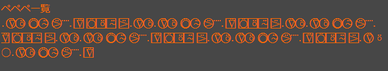
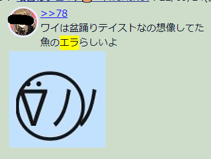
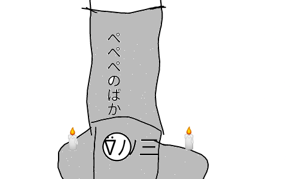

ペペペ
ペペペ（英:Pepepe・漢:箆箆箆 )は、おーぷぬ目・顔文字科・曲族・曲属（学名:Musicnus）に分類される軟骨魚類の相称。暖海性で内洋性、回遊性の小型魚[要出典]で、主に「おーぷん2ちゃんねる」に生息している。一方で、「箱型ロボット」[出典]を自称する姿も確認されている。
定義

『ペペペ一覧』
『溶けた「ペペペ」』
本記事での「ペペペ」の定義は、[検閲により削除]氏の定めた「ペペペ一覧」に則る。 主に■型と●型の二種類が存在している。 また、[検閲により削除]氏は溶けたペペペの姿を記録に残している。 以下、本記事では特記なき限り「おーぷん2ちゃんねる」に生息する生物としての「ペペペ」を解説する。
起源
ペペペの起源は、2021年4月17日(土)に立てられた「テスト ⍤⃝ 」[出典]である。一方で、2014年12月27日（土）に建てられた『「お姉さん、トレンディだね！」って振ったときのハロメンそれぞれの反応』の中でも、「从 ´ﾟeﾟ ﾘ＜ペッペッペッ！」と話す生物[出典]が確認できる。これは、顔文字科・モーニング娘。'22族・小田さくら属であり、本記事の「ペペペ」との関連性はないという見方が一般的である。また、「少年アシベ」に登場する「ペッペッペッ・ソーランアレマ」との関連性も示唆されているが、定かではない。
特徴
【生態】

「ペペペ」のエラ
【その他のおーぷぬ目との関係性】

『ペペペのばか』
関連項目